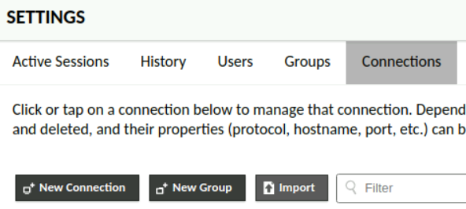
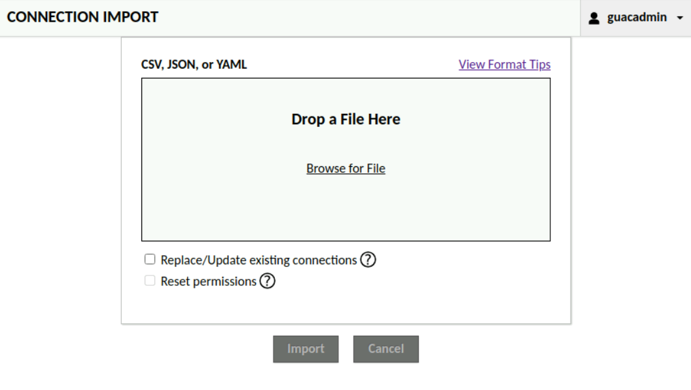
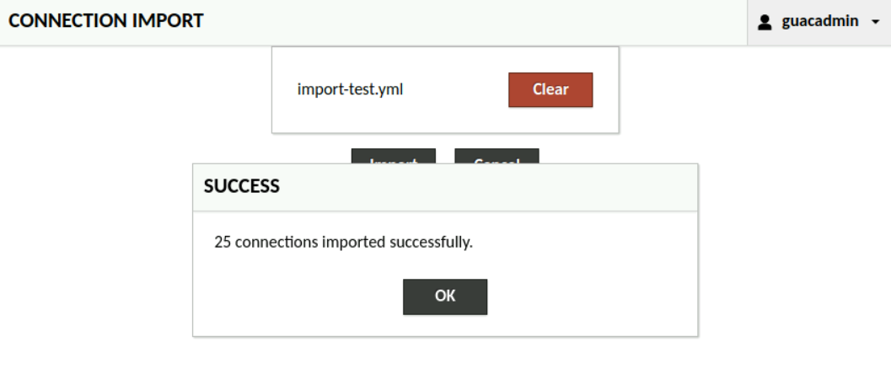
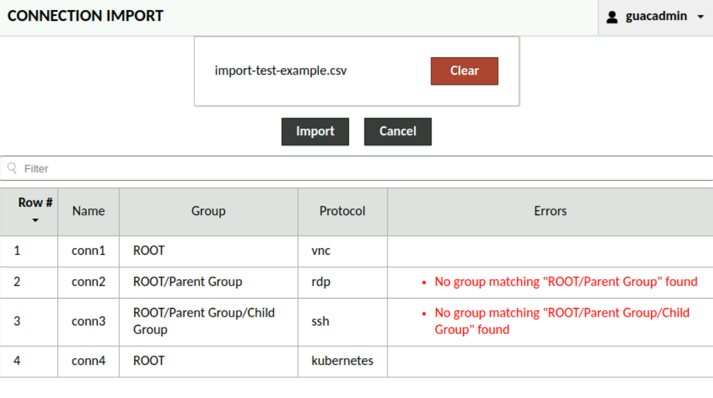

Importing connections from CSV, JSON, or YAML#
Administrators may batch import connections and connection groups from a file, if the underlying authentication module supports dynamic connection/group creation. To start a batch import, click the “Import” button on the connection edit tab.

At this point, the interface will accept a CSV, JSON, or YAML file containing a list of connections to be imported.

Success#
On success, the batch import UI will simply display a message indicating how many connections were imported.

Failure#
If import fails, the importer will display a list of the connections, along with any relevant connection-specific errors, unless a file format error prevents parsing the file into a list of connections at all.

Import file format#
Three file types are supported for connection import: CSV, JSON, and YAML. The same data may be specified by each file type. This must include the connection name and protocol. Optionally, a connection group location, a list of users and/or user groups to grant access, connection parameters, or connection protocols may also be specified. Any users or user groups that do not exist in the current data source will be automatically created. Note that any existing connection permissions will not be removed for updated connections, unless “Reset permissions” is checked.
This same file format information is available within the webapp, at the “View Format Tips” link.
CSV Format#
A connection import CSV file has one connection record per row. Each column will specify a connection field. At minimum the connection name and protocol must be specified.
The CSV header for each row specifies the connection field. The connection group ID that the connection should be imported into may be directly specified with “parentIdentifier”, or the path to the parent group may be specified using “group” as shown below. In most cases, there should be no conflict between fields, but if needed, an “ (attribute)” or “ (parameter)” suffix may be added to disambiguate. Lists of user or user group identifiers must be semicolon-separated. If present, semicolons can be escaped with a backslash, e.g. “first;last”.
name,protocol,username,password,hostname,group,users,groups,guacd-encryption (attribute)
conn1,vnc,alice,pass1,conn1.web.com,ROOT,guac user 1;guac user 2,Connection 1 Users,none
conn2,rdp,bob,pass2,conn2.web.com,ROOT/Parent Group,guac user 1,,ssl
conn3,ssh,carol,pass3,conn3.web.com,ROOT/Parent Group/Child Group,guac user 2;guac user 3,,
conn4,kubernetes,,,,,,,
JSON Format#
A connection import JSON file is a list of connection objects. At minimum the connection name and protocol must be specified in each connection object.
The connection group ID that the connection should be imported into may be directly specified with a “parentIdentifier” field, or the path to the parent group may be specified using a “group” field as shown below. An array of user and user group identifiers to grant access to may be specified per connection.
[
{
"name": "conn1",
"protocol": "vnc",
"parameters": { "username": "alice", "password": "pass1", "hostname": "conn1.web.com" },
"parentIdentifier": "ROOT",
"users": [ "guac user 1", "guac user 2" ],
"groups": [ "Connection 1 Users" ],
"attributes": { "guacd-encryption": "none" }
},
{
"name": "conn2",
"protocol": "rdp",
"parameters": { "username": "bob", "password": "pass2", "hostname": "conn2.web.com" },
"group": "ROOT/Parent Group",
"users": [ "guac user 1" ],
"attributes": { "guacd-encryption": "none" }
},
{
"name": "conn3",
"protocol": "ssh",
"parameters": { "username": "carol", "password": "pass3", "hostname": "conn3.web.com" },
"group": "ROOT/Parent Group/Child Group",
"users": [ "guac user 2", "guac user 3" ]
},
{
"name": "conn4",
"protocol": "kubernetes"
}
]
YAML Format#
A connection import YAML file is a list of connection objects with exactly the same structure as the JSON format.
---
- name: conn1
protocol: vnc
parameters:
username: alice
password: pass1
hostname: conn1.web.com
group: ROOT
users:
- guac user 1
- guac user 2
groups:
- Connection 1 Users
attributes:
guacd-encryption: none
- name: conn2
protocol: rdp
parameters:
username: bob
password: pass2
hostname: conn2.web.com
group: ROOT/Parent Group
users:
- guac user 1
attributes:
guacd-encryption: none
- name: conn3
protocol: ssh
parameters:
username: carol
password: pass3
hostname: conn3.web.com
group: ROOT/Parent Group/Child Group
users:
- guac user 2
- guac user 3
- name: conn4
protocol: kubernetes